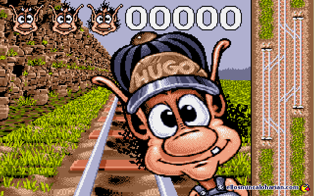

Всем привет!
Как и обещал, переношу свой пост из телеграм канала Джун уронил прод @djuup.
Статья Программист? Сделай блог выходила на канале в двух частях, здесь вы можете прочитать обе в одном целостном посте.
Приятного чтения!
О чем этот пост
Наполнение этого поста расскажет, как быстро и просто запустить собственный блог аналогичный этому, а если вы программист и шарите, то сделать это абсолютно бесплатно и красиво. Стоимость сделать такой блог колышется от 0 до 99 рублей в год и всё зависит от того захотите ли вы свой красивый домен. Я захотел.
Читайте дальше, если вы понимаете зачем вам блог и уже горите идеями, так ярко, что даже у черных дыр не хватило бы массы утянуть за собой столько света.
Здесь вы не найдете филосовствований о целевой аудитории и интересном контенте, а только техническая сторона, по делу, что и как сделать.
Поехали
Что такое блог в глазах программиста? Это какая-то информация в виде постов, которую нужно выбрасывать по первому требованию, так давайте выбрасывать его с энтузиазмом. Конечно, вы можете взять WordPress и в красивом интерфейсе накидать всё что хотите. Управлять контентом из админки и так далее, но готовы ли вы отдавать за возможность подключить кастомный домен по $3 в месяц, да еще и оплата ежегодная, т.е. вы сразу выкините $ 36 (2160 руб. при курсе 60 руб за $1). Это путь моей жены, но не мой.
К чёрту динамику
Я убежден, что всё что нужно для суперского блога это html + css и немножко js. Какие PHP? Какая БД? Что за чушь! Момент, когда вы публикуете новый пост вполне детерминирован и на самом деле, всё что вам нужно, это сохранить страничку с вашим годным контентом, а затем отдать её при запросе определенного URL’a. Как это сделать? На помощь приходят генераторы статических страниц, такие как Hugo или Jekyll. В этом посте остановимся на hugo.

“Где этот мерзавец?”
Для начала ставим себе Git, например, отсюда.
“Хочу блог. Красивый чтоб”
Примерно так и работает hugo. Наша цель на этом этапе сгенерировать себе блог для этого, по шагам:
- Качаем Hugo в любую удобную директорию
- Добавляем к Path в переменных окружения bin папку в этой директории, например, C://hugo/bin. Теперь мы можем генерить где угодно и что угодно
- Открываем cmd или bash (что сподручнее) переходим в директорию, где появится папка с блогом. Находясь в этой директории прописываем:
hugo new site your-blog-name
- Готово, блог сгенерён, но вы же хотите, чтобы красиво? По этому, переходим в папку с блогом, выбираем тему здесь (пожалуй, самый сложный этап - это выбрать тему) и действуем в соответствии с указаниями в теме. Скорее всего они будут следующими: перейдите в папку themes и склонируйте туда гит репозиторий темы, возьмем, например, эту тему.
- Склонировали? Возвращаемся в папку с блогом и открываем текстовым редактором файл config.toml. В нём устанавливаем тему, например, так
theme = "hemingway2"
- Почти готово. Пишем в cmd/bash
hugo
hugo server
- Изи катка. Открываем http://localhost:1313/ вот и наш блог.
Блог без постов как Нева без мостов
Чтобы докинуть постов не обязательно выключать сервер. Просто открываете еще одну консоль/терминал и пишете
hugo new post/my-new-post.md
Каждый пост - это Markdown файлик с дополнительными метаднными, этот файлик вы найдете в content/post. Чтобы опубликовать пост нужно указать в метаданных внутри файла: draft = false. Метаданные отделяются плюсами.
Каждый новый пост - это новый файлик, благодаря которому обновляется статический контент.
Нужно понимать, что предварительно сгенерированная статика это довольно быстро и абсолютно безопасно, т.к. у вас нет админки, которую можно взломать.
НА ПРОД!
Всё бы хорошо, только что с этим всем делать?
После выполнения пустой команды hugo каждый раз перегенерируется папка public. Она-то нам и нужна. В этой папке лежит готовая статика блога. Но нужно куда-то это опубликовать. Здесь на помощь приходят github pages. Регистрируемся на github.com и создаем репозиторий, например, blog. При создании репозитория github напишет как правильно отправить туда код. Что же нужно сделать в нашем случае? Перейти в папку public и выполнить в ней:
git init
git add *
git commit -m 'init'
git remote add origin https://github.com/<user-login>/<repo-name>.git
git push -u origin master
Не забудьте поправить URL’ы. При любых изменениях в блоге вам нужно будет перекоммитить статику в гитхаб. Теперь открываем настройки репозитория (Settings) и смотрим что там есть. Находим раздел GitHub Pages. Указываем, что статика будет браться из master ветки и сохраняем.
Вот и всё
GitHub на месте скажет ваш URL, это будет что-то вроде https://ivan-osipov.github.com/blog.
Как свистульки прикрутить?
Hugo - довольно гибкий инструмент и с его помощью можно провернуть много чего интересного не рассмотренного в этой статье. Ответы на большинство вопросов дает документация Hugo. Отнеситесь внимательно и к документации темы, она поможет вам лучшим способом сконфигурировать и настроить ваш блог.
Продолжение следует
comments powered by Disqus